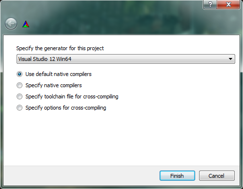

Here's a checklist for the whole process to use to help you follow along the guide. It may take a while if it's your first time.
Pulling The Source
Git Cloning
Right-click on the directory and click on Git Extensions -> Clone.

Fill in the data as follows:
Repository to clone: https://github.com/TrinityCore/TrinityCore.git
Destination: C:\TrinitySource
Subdirectory to create: <none> (delete anything in this field)
Branch: 4.3.4 (The Master branch is currently the 3.3.5a Wrath of the Lich King server, so be sure to select 4.3.4 for Cata) (if you select the dropdown it will show you the available branch if you wait few seconds)
Personal Repository: Yes
Click Clone. Within a few minutes all of the TrinityCore source files will be pulled into the folder.
Configuring and Generating Visual C++ solutions with CMake
(Getting the source ready for compiling, in other words.)
Before you begin, create an empty folder called Build. In this example, we will use C:\TrinityBuild. This will be where the server 'core' is built, but not where it is run from.
-Open the CMake GUI (default install directory is C:\Program Files (x86)\CMake 2.8\bin).
-Un-check the box, then click OK

-The two top text areas are used to tell CMake where to look for the source tree, and then where to put the build files.
Click Browse Source... -> Select the source directory (C:/TrinitySource)
Click Browse Build... -> Select the build directory (C:/TrinityBuild)

Click Configure
Make sure 'Use default native compilers' is checked.
In the drop-down menu, choose the version of the compiler you downloaded in the Software Required section (which version of Visual C++ Express did you install? In this tutorial, it's "Visual Studio 12 64bit - 2013").

Click Finish. CMake will begin chewing through the source code and analyzing the CMakeLists.txt spread all over the source tree.
CMake shows you a list of options for selecting different components of the build.

-Check "Tools". This will compile the map extractors needed later in the setup.
-All other default selections are OK.
When your selection is done, click Configure again.
Compiling the Source
Browse into your C:\TrinityBuild folder and open TrinityCore.sln with Visual C++ Express. Just double-clicking it should work.
On the menu at the top, click Build and select Configuration Manager.
Set Active Solution Configuration to Release
Set Active Solution Platform to Win32 (if you set 64-bit compilation during the CMake configuration, select Win64)
(If using Visual C++ 2010, simply use the list menus below the "Help" menu and make the same changes explained above, though it should already be done by default).
Click Build -> Clean Solution.
(Visual C++ 2010: Right-click *ALL_BUILD in the Solution Explorer on the left sidebar and select Clean.)
*Unless you are just testing a compilation, it is always best to clean your build before compiling your new Trinity revision.
Click Build -> Build Solution.
(Visual C++ 2010: Right-click *ALL_BUILD and select Build.)
Compilation length differs from machine to machine, you should expect it to take 5-30 minutes.
(If you are asked to Reload build files during the compile, do so.)
You will find a similar message once the compilation has finished successfully, remember it's not always the same:
========== Build: 18 succeeded, 0 failed, 0 up-to-date, 1 skipped ==========
The important thing is that none failed.
You will find your freshly compiled binaries in the C:\TrinityBuild\bin\release folder. These are all used to run your server at the end of this instruction.
Create a new folder in C:\ named TrinityCore (C:\TrinityCore\).
COPY entire contents of the Release folder (C:\TrinityBuild\bin\release\) into C:\TrinityCore\
You will need the following files in order for the core to function properly. Most are already located in your C:\TrinityBuild\bin\release folder:
libeay32.dll*
libmySQL.dll*
ssleay32.dll*
worldserver.conf.dist
worldserver.exe
authserver.conf.dist
authserver.exe
*libeay32.dll, libmySQL.dll, and ssleay32.dll will need to be manually added to this folder, and you need to copy them over from the following installation/bin directories:
-libmySQL.dll: C:\Program Files\MySQL\MySQL Server x.x\lib\
-libeay32.dll and ssleay32.dll: C:\OpenSSL-Win32\bin\ 32 bits or C:\OpenSSL-Win64\bin\ 64 bits
Now that you have the Source compiled and the Databases installed, you need to set up the server.
Extractors
Extracting the Maps, VMaps, and DBC
Trinity requires dbc and map files. It is optional but highly recommended to also extract vmaps, which enable Line-of-Sight rules (casting through walls, etc) and Sanctuary areas (like Dalaran). Without them, mobs will see you and aggro right through walls 
When you used CMake earlier, you should have checked the Tools checkbox. This will have put the tools in your C:\TrinityBuild\bin\Release\ folder.
Browse into your C:\TrinityBuild\bin\Release folder and copy these files into your root World of Warcraft folder:
mapextractor.exe, vmap4extractor.exe, vmap4assembler.exe, and makevmaps_simple.bat
If you do not have makevmaps_simple.bat, create it inside your root World of Warcraft folder:
Create a new text document in the World of Warcraft folder.
Open it with Notepad.
Copy and paste the following inside it:
md vmaps
vmap4assembler.exe Buildings vmaps
Now go to File --> Save As...
File Name: makevmaps_simple.bat
Save as type: All Files (*.*)
You can now delete the New Text Document.txt, and should have a Windows Batch File named makevmaps_simple.bat
Run your WoW client once (the login screen is enough). You need to do this so that the mapextractor.exe knows where your WoW Client is and where to extract the files from.
Run mapextractor.exe and wait until it is finished. It will create dbc and maps folders
Run makevmaps_simple.bat. It will create buildings and vmaps folders. When finished, the Buildings folder can be deleted, it is of no use.
Move the dbc, maps, and vmaps folders to the server core folder C:\TrinityCore\.
Continue to Populating the Database TDB 4.3.4 + DB Updates
If your server revision doesn't match, and the server won't work, here's how to pull the proper server:
SHIFT-right click your repo folder (Should be named TrinitySource)
Select "Open Command Window Here"
(git log <-you can see what revision you want, q <- to quit from commit lists)
Remember the revision number you found at https://github.com/TrinityCore/TrinityCore_4.3.4_DB_Alpha? Enter it here (replace the example b288881f6 with what you found)-
git checkout b28881f6 <- with the first 6 or 8 characters is ok
Congratulations, now your repo is in that revision
It only replaces changed files, so you won't see much happen...but when you run CMake again, you'll now see the matching revision number if it worked.
Remember, if you want to back to master revision, do this:
git checkout master <-now you are in the master repo
if you want to go to another specific revision you must to do this first, then the steps above.
This guide was based and adapted from Windows
{kind=link}
{kind=link}
{kind=link}
{kind=link}
{kind=link}
{kind=link}
{kind=link}
{kind=link}
{kind=link}
{kind=link}
{kind=link}
{kind=link}